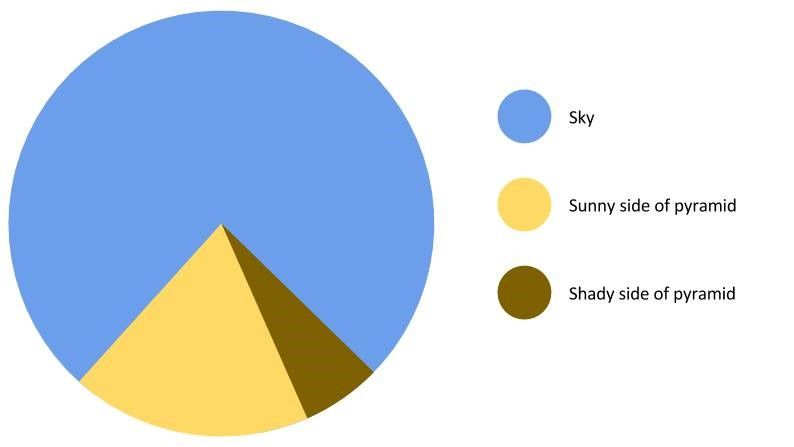

What is Data Visualization?
What is Data Visualization? (and why should you care?)
Data exploration and storytelling: finding stories with data with exploratory analysis and visualization
When you transform numbers to graphical elements, graphics let you identify patterns and trends
These graphics can also be used the communicate
Software tools to create graphics or express findings
Not just data visualization, but data communication
"The purpose of visualization is insight, not pictures." ―Ben Shneiderman
